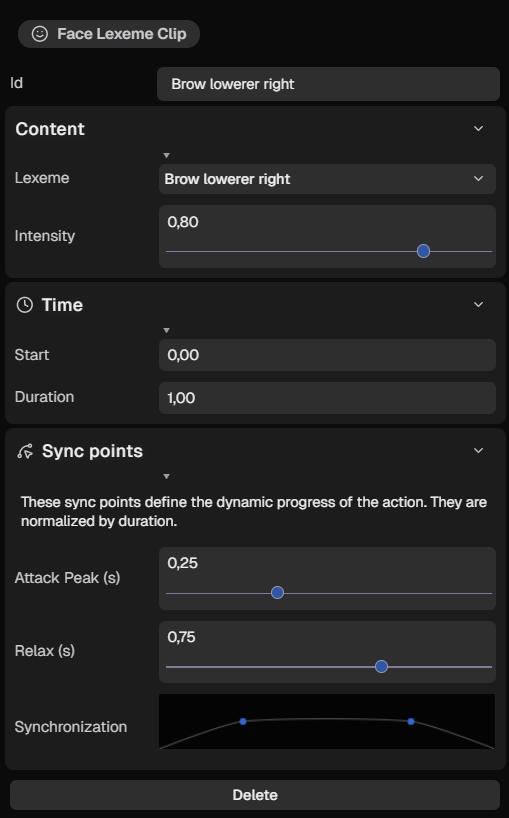
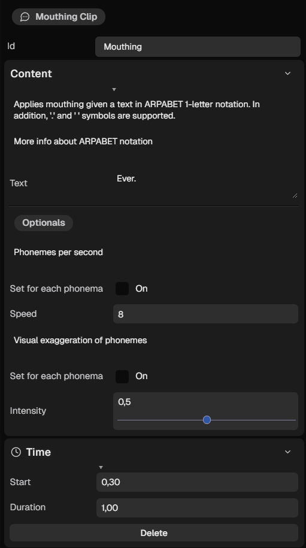
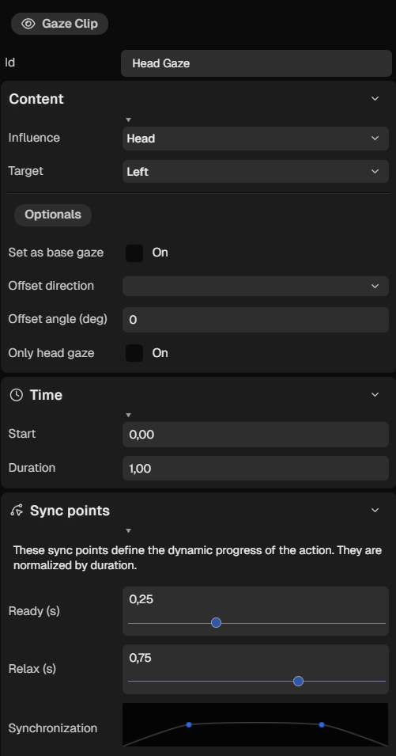
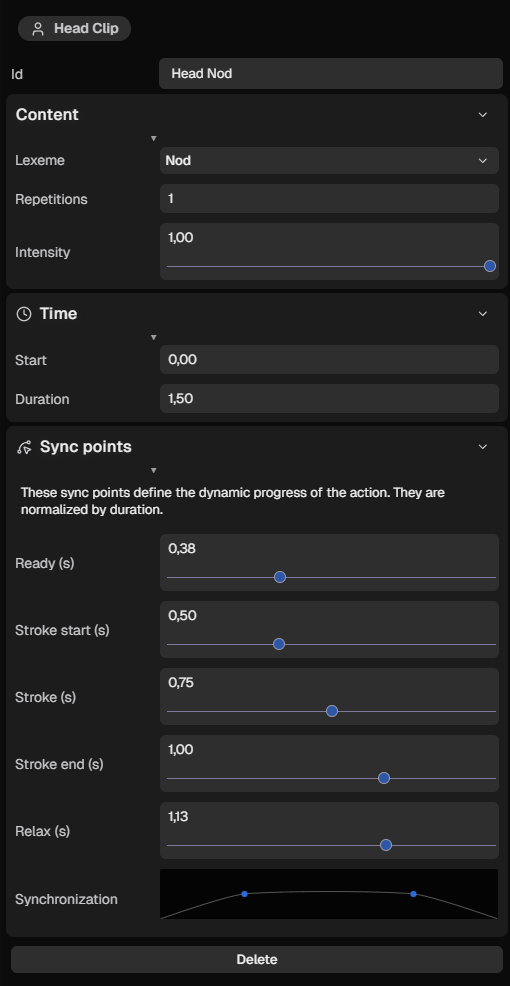
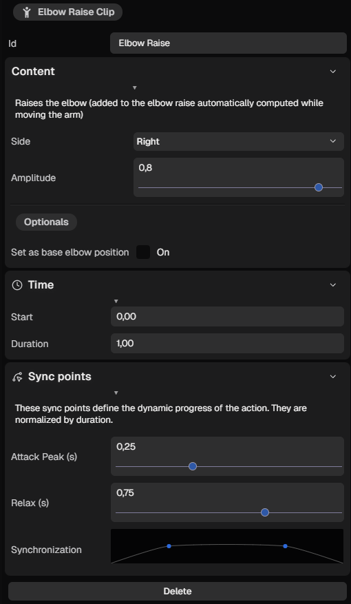
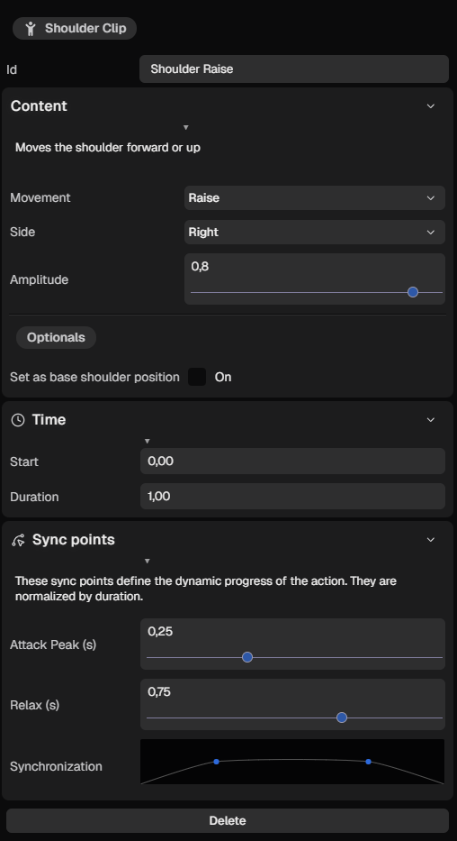
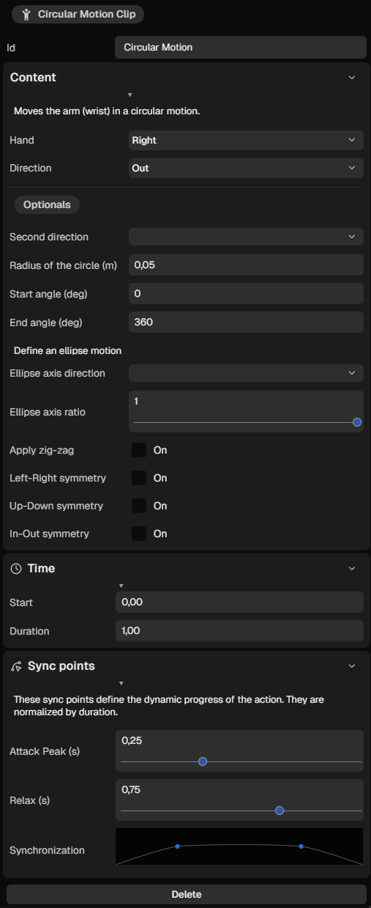

<script type="text/javascript">
{
    MAKE_HEADER("Behaviour Clips", "h1", "generate-animations");
    
    MAKE_PARAGRAPH(`A <i>clip</i> is an instruction for applying a verbal and/or nonverbal behaviour based on an extended <a href="https://projects.cs.ru.is/projects/behavior-markup-language/wiki#Introduction">BML (Behaviour Markup Language)</a>, supporting <a href="https://vh.cmp.uea.ac.uk/index.php/SiGML">SiGML (Signing Gesture Markup Language)</a> standard descriptions. Each clip has an <b class="fg-success">id</b>, <b class="fg-success">start time</b> and <b class="fg-success">duration</b>. Users have the flexibility to modify these parameters, along with other variable properties. The realization of each behavior can be divided into phases, with each phase marked by a sync-point denoting the associated transition. Notably, these sync-point values are falling within the range [0, duration]. The time and the sync-point parameters are in seconds.`);

    MAKE_HEADER("Visualization", "h2", "clips-color");

    MAKE_PARAGRAPH(`The color of a clip depends on its type behaviour. Upon selecting a clip, its highlighter and name color shift to white. The <i>fade-in</i> and <i>fade-out</i> animations of the clip are denoted by intensified colors. The <i>fade-in</i> signifies when the action is achieved, while the <i>fade-out</i> marks the point when the character begins returning to their default state.`);

    MAKE_HEADER("Clip types", "h2", "clips-list");
    let i = LX.makeIcon("Smile");
    MAKE_HEADER(`<span class="flex">${i.outerHTML} <p class="pl-2"> Head behaviours</p></span>`, "h5", "");
    MAKE_BULLET_LIST([
        `<a href="#face-lexeme">Face Lexeme</a>`,
        `<a href="#mouthing">Mouthing</a>`,
        `<a href="#gaze">Gaze</a>`,
        `<a href="#head-movement">Head Movement</a>`,
    ]);
    i = LX.makeIcon("HandsAslInterpreting");
    MAKE_HEADER(`<span class="flex">${i.outerHTML} <p class="pl-2"> Hand behaviours</p></span>`, "h5", "");
    MAKE_BULLET_LIST([
        `Palm Orientation`,
        `Hand Orientation`,
        `Handshape`,
        `Wrist Motion`,
        `Fingerplay Motion`
    ]);
    i = LX.makeIcon("ChildReaching");
    MAKE_HEADER(`<span class="flex">${i.outerHTML} <p class="pl-2"> Arm behaviours</p></span>`, "h5", "");
    MAKE_BULLET_LIST([
        `<a href="#hand-constellation">Hand Constellation</a>`,
        `<a href="#directed-motion">Directed Motion</a>`,
        `<a href="#circular-motion">Circular Motion</a>`,
        `<a href="#elbow-raise">Elbow Raise</a>`,
        `<a href="#shoulder-movement">Shoulder Raise</a>`,
        `<a href="#shoulder-movement">Shoulder Hunch</a>`,
        `Arm Location`,
    ]);
    i = LX.makeIcon("PersonWalkingArrowLoopLeft");
    MAKE_HEADER(`<span class="flex">${i.outerHTML} <p class="pl-2"> Body behaviours</p></span>`, "h5", "");
    MAKE_BULLET_LIST([       
        `Body Movement`
    ]);

    let faceContainer = document.createElement('div');
    MAKE_HEADER("Face Lexeme", "h3", "face-lexeme");
    MAKE_PARAGRAPH("Show a (partial) face expression from a predefined lexicon. This behavior offers a range of predefined expressions. Each lexeme is a convenience shorthand for combinations of more detailed low level face controls. The provided set of core lexemes allows one to perform face expressions using meaningful lexeme names.");
    
    let containerD = LX.makeContainer(["auto", "auto"], "flex flex-row gap-4 justify-between", ``, faceContainer);
    let content = LX.makeContainer(["auto", "auto"], "flex flex-col gap-4 p-4", ``, containerD);
    
    MAKE_LINE_BREAK();
    let img = LX.makeContainer(["400px", "auto"], "flex flex-col gap-4 p-4", ``, mainContainer);
    containerD.appendChild(img);

    APPEND_HEADER(content, "Id", "h5", "", "fg-accent");
    APPEND_PARAGRAPH(content, "<p class='pl-4'>Identifier name. The default value is the name of the lexeme.</p>", true);

    APPEND_HEADER(content, "Content", "h4", "");
    APPEND_HEADER(content, "Lexeme", "h5", "", "fg-accent");
    APPEND_PARAGRAPH(content,  "<p class='pl-4'>Name of a face lexeme from the available list.</p>", true)
    let div = document.createElement('div');
    div.className = "flex flex-wrap gap-2";
    for(const w of ["Arch",
                                            "Brow lowerer",
                                            "Brow lowerer left",
                                            "Brow lowerer right",
                                            "Brow raiser",
                                            "Brow raiser left",
                                            "Brow raiser right",
                                            "Inner brow raiser",
                                            "Outer brow raiser",
                                            "Squint",
                                            "Blink",
                                            "Eyes closed",
                                            "Upper lid raiser",
                                            "Upper lid raiser left",
                                            "Upper lid raiser right",
                                            "Cheek raiser",
                                            "Lid tightener",
                                            "Wink left",
                                            "Wink right",
                                            "Cheek suck",
                                            "Cheek suck left",
                                            "Cheek suck right",
                                            "Cheek blow",
                                            "Cheek blow left",
                                            "Cheek blow right",
                                            "Nose wrinkler",
                                            "Nostril dilator",
                                            "Nostril compressor",
                                            "Lip corner depressor",
                                            "Lip corner depressor left",
                                            "Lip corner depressor right",
                                            "Lip corner puller",
                                            "Lip corner puller left",
                                            "Lip corner puller right",
                                            "Lip stretcher",
                                            "Lip funneler",
                                            "Lip tightener",
                                            "Lip puckerer",
                                            "Lip puckerer left",
                                            "Lip puckerer right",
                                            "Lip pressor",
                                            "Lips part",
                                            "Lip suck",
                                            "Lip suck upper",
                                            "Lip suck lower",
                                            "Lower lip depressor",
                                            "Lower lip depressor left",
                                            "Lower lip depressor right",
                                            "Upper lip raiser",
                                            "Upper lip raiser left",
                                            "Upper lip raiser right",
                                            "Chin raiser",
                                            "Dimpler",
                                            "Dimpler left",
                                            "Dimpler right",
                                            "Lip bite",
                                            "Smile teeth",
                                            "Smile teeth wide",
                                            "Smile closed",
                                            "Round open",
                                            "Round closed",
                                            "Mouth stretch",
                                            "Close tight",
                                            "Jaw drop",
                                            "Jaw thrust",
                                            "Jaw sideways left",
                                            "Jaw sideways right",
                                            "Tongue bulge left",
                                            "Tongue bulge right",
                                            "Tongue up",
                                            "Tongue show",
                                            "Tongue wide",
                                            "Lip wipe",
                                            "Neck tightener"]) {
        const lexeme = w.toLowerCase();
        LX.makeContainer(["auto", "100px"], "", `<div class="flex-col"><p class="text-sm text-center">${w}</p></div>`, div)
    }
    LX.makeContainer(["auto", "auto"], "", `<details><summary style="padding-left: 1em;"><i class="cursor-pointer">List of lexemes</i></summary>${div.outerHTML}`, content)
    
    APPEND_HEADER(content, "Intensity", "h5", "", "fg-accent");
    APPEND_PARAGRAPH(content,  "<p class='pl-4'>A float value between 0..1 to indicate the amount to which the expression should be shown on the face, 0 meaning 'not at all' and 1 meaning 'maximum, highly exaggerated'.</p>", true);

    APPEND_HEADER(content, "Time", "h4", "");
    APPEND_HEADER(content, "Start", "h5", "", "fg-accent");
    APPEND_PARAGRAPH(content,  "<p class='pl-4'>Second at which the face expression begins.</p>", true);
    APPEND_HEADER(content, "Duration", "h5", "", "fg-accent");
    APPEND_PARAGRAPH(content, "<p class='pl-4'>Duration time, in seconds, of the face expression.</p>", true);
    
    APPEND_HEADER(content, "Sync points", "h4", "");
    APPEND_HEADER(content, "Attack Peak", "h5", "", "fg-accent");
    APPEND_PARAGRAPH(content, "<p class='pl-4'>Second at which the maximum expression is achieved. In the interval [0, duration].</p>", true);
    APPEND_HEADER(content, "Relax", "h5", "", "fg-accent");
    APPEND_PARAGRAPH(content, "<p class='pl-4'>Second at which the decay phase starts. In the interval [0, duration].</p>", true);

    LX.makeContainer(["auto", "auto"], "", `<details><summary class="pl-4" ><b class="cursor-pointer text-l italic">Details</b></summary>${faceContainer.outerHTML}`, mainContainer)
    
    /** MOUTHING **/
    MAKE_HEADER("Mouthing", "h3", "mouthing");
    MAKE_PARAGRAPH(`Generation of lip movements from a text in <a href="https://en.wikipedia.org/wiki/ARPABET"><i>ARPABET 1-letter notation</i></a>. In which, '.' and ' ' symbols are also supported. </p>`);
    
    let mouthingContainer = document.createElement('div');
    containerD = LX.makeContainer(["auto", "auto"], "flex flex-row gap-4 justify-between", ``, mouthingContainer);
    content = LX.makeContainer(["auto", "auto"], "flex flex-col gap-4 p-4", ``, containerD);
    
    MAKE_LINE_BREAK();

    APPEND_HEADER(content, "Id", "h5", "", "fg-accent");
    APPEND_PARAGRAPH(content, "<p class='pl-4'>Identifier name. The default value is <i>Mouthing</i>.</p>", true);
    
    APPEND_HEADER(content, "Content", "h4", "");
    APPEND_HEADER(content, "Text", "h5", "", "fg-accent");
    APPEND_PARAGRAPH(content, "<p class='pl-4'>String of the text which is wanted to be simulated in the form of ARPABET 1-letter.</p>", true);
    
    APPEND_HEADER(content, "Optionals", "h4", "", "italic");
    APPEND_HEADER(content, "Speed <span style='color: orangered;'> *</span>", "h5", "", "fg-accent");
    APPEND_PARAGRAPH(content, "<p class='pl-4'>Phonemes per second of the whole string. Humans speak at 8 phonemes per second (lower boundary).</p>", true);
    APPEND_HEADER(content, "Intensity <span style='color: orangered;'> *</span>", "h5", "", "fg-accent");
    APPEND_PARAGRAPH(content, "<p class='pl-4'>Visual exaggeration of phonemes. In the interval [0,1].</p>", true);
    APPEND_PARAGRAPH(content, "<p class='fg-tertiary'><span style='color: orangered;'> *</span> It can be specified individually for each phoneme. Turn ON the <i>Set for each phonema</i> property.</p>", true);

    APPEND_HEADER(content, "Time", "h4", "");
    APPEND_HEADER(content, "Start", "h5", "", "fg-accent");
    APPEND_PARAGRAPH(content,  "<p class='pl-4'>Second at which the mouthing begins.</p>", true);
    APPEND_HEADER(content, "Duration", "h5", "", "fg-accent");
    APPEND_PARAGRAPH(content, "<p class='pl-4'>Duration time, in seconds, of the utterance. Automatically computed using the content properties.</p>", true);

    img = LX.makeContainer(["400px", "auto"], "flex flex-col gap-4 p-4", ``, mainContainer);
    containerD.appendChild(img);

    LX.makeContainer(["auto", "auto"], "", `<details><summary class="pl-4" ><b class="cursor-pointer text-l italic">Details</b></summary>${mouthingContainer.outerHTML}`, mainContainer)

    /** GAZE **/
    MAKE_HEADER("Gaze", "h3", "gaze");
    MAKE_PARAGRAPH(`<p>Temporarily directs the gaze of the character towards a target.</p>`);
    
    let gazeContainer = document.createElement('div');
    containerD = LX.makeContainer(["auto", "auto"], "flex flex-row gap-4 justify-between", ``, gazeContainer);
    content = LX.makeContainer(["auto", "auto"], "flex flex-col gap-4 p-4", ``, containerD);
    
    MAKE_LINE_BREAK();

    APPEND_HEADER(content, "Id", "h5", "", "fg-accent");
    APPEND_PARAGRAPH(content, "<p class='pl-4'>Identifier name. The default value is the name of the gaze influence.", true);
    
    APPEND_HEADER(content, "Content", "h4", "");
    APPEND_HEADER(content, "Influence", "h5", "", "fg-accent");
    APPEND_PARAGRAPH(content, "<p class='pl-4'>Determines what parts of the body to move to affect the gaze direction: <b><i>Eyes</i></b>, <b><i>Head</i></b>, <b><i>Neck</i></b>.</p>", true);
    APPEND_HEADER(content, "Target", "h5", "", "fg-accent");
    APPEND_PARAGRAPH(content, "<p class='pl-4'>A reference towards a target instance that represents the target direction of the gaze.</p>", true);
    div = document.createElement('div');
    div.className = "flex flex-wrap gap-2";
    for(const w of ["Front", "Left", "Right", "Up", "Down", "Up left", "Up right", "Down left", "Down right"]) {
        const lexeme = w.toLowerCase();
        LX.makeContainer(["auto", "100px"], "", `<div class="flex-col"><p class="text-sm text-center">${w}</p></div>`, div)
    }
    LX.makeContainer(["auto", "auto"], "", `<details><summary style="padding-left: 1em;"><i class="cursor-pointer">List of targets</i></summary>${div.outerHTML}`, content)
    
    APPEND_HEADER(content, "Optionals", "h4", "", "italic");
    APPEND_HEADER(content, "Base gaze", "h5", "", "fg-accent");
    APPEND_PARAGRAPH(content, "<p class='pl-4'>Turning <i>ON</i> permanently changes the gaze direction of the character towards the target.</p>", true);
    APPEND_HEADER(content, "Offset angle", "h5", "", "fg-accent");
    APPEND_PARAGRAPH(content, "<p class='pl-4'>Adds an angle degrees offset to gaze direction relative to the target in the direction specified in the <i>Offset direction</i>. In degrees. By default is 0.0.</p>", true);
    APPEND_HEADER(content, "Offset direction", "h5", "", "fg-accent");
    APPEND_PARAGRAPH(content, "<p class='pl-4'>Direction of the <i>Offset angle</i> angle. Same directions as target property.</p>", true);

    APPEND_HEADER(content, "Time", "h4", "");
    APPEND_HEADER(content, "Start", "h5", "", "fg-accent");
    APPEND_PARAGRAPH(content,  "<p class='pl-4'>Second at which the gaze starts to move to new target.</p>", true);
    APPEND_HEADER(content, "Duration", "h5", "", "fg-accent");
    APPEND_PARAGRAPH(content, "<p class='pl-4'>Duration time, in seconds, of gaze returned to default direction.</p>", true);
 
    APPEND_HEADER(content, "Sync points", "h4", "");
    APPEND_HEADER(content, "Ready", "h5", "", "fg-accent");
    APPEND_PARAGRAPH(content, "<p class='pl-4'>Second at which the gaze target is acquired. In the interval [0, duration].</p>", true);
    APPEND_HEADER(content, "Relax", "h5", "", "fg-accent");
    APPEND_PARAGRAPH(content, "<p class='pl-4'>Second at which the gaze starts returning to default direction. In the interval [0, duration].</p>", true);

    img = LX.makeContainer(["400px", "auto"], "flex flex-col gap-4 p-4", ``, mainContainer);
    containerD.appendChild(img);
    LX.makeContainer(["auto", "auto"], "", `<details><summary class="pl-4" ><b class="cursor-pointer text-l italic">Details</b></summary>${gazeContainer.outerHTML}`, mainContainer)


    /** HEAD MOVEMENT **/
    MAKE_HEADER("Head Movement", "h3", "head-movement");
    MAKE_PARAGRAPH(`<p>Head movement retrieved from a gesticon by requesting the associated lexeme.</p>`);
    
    let headContainer = document.createElement('div');
    containerD = LX.makeContainer(["auto", "auto"], "flex flex-row gap-4 justify-between", ``, headContainer);
    content = LX.makeContainer(["auto", "auto"], "flex flex-col gap-4 p-4", ``, containerD);
    
    MAKE_LINE_BREAK();

    APPEND_HEADER(content, "Id", "h5", "", "fg-accent");
    APPEND_PARAGRAPH(content, "<p class='pl-4'>Identifier name. The default value is the name of the lexeme.", true);
    
    APPEND_HEADER(content, "Content", "h4", "");
    APPEND_HEADER(content, "Lexeme", "h5", "", "fg-accent");
    APPEND_PARAGRAPH(content, "<p class='pl-4'>Name of the particular head behavior from the available list.</p>", true);
    div = document.createElement('div');
    div.className = "flex flex-wrap gap-2";
    for(const w of [ "Nod", "Shake", "Tilt", "Tilt left", "Tilt right", "Tilt forward", "Tilt backward", "Forward", "Backward"]) {
        const lexeme = w.toLowerCase();
        LX.makeContainer(["auto", "100px"], "", `<div class="flex-col"><p class="text-sm text-center">${w}</p></div>`, div)
    }
    LX.makeContainer(["auto", "auto"], "", `<details><summary style="padding-left: 1em;"><i class="cursor-pointer">List of lexemes</i></summary>${div.outerHTML}`, content)
    
    APPEND_HEADER(content, "Repetitions", "h5", "", "fg-accent");
    APPEND_PARAGRAPH(content, "<p class='pl-4'>Number of times the basic head motion is repeated.</p>", true);
    APPEND_HEADER(content, "Intensity", "h5", "", "fg-accent");
    APPEND_PARAGRAPH(content, "<p class='pl-4'>A float value between 0..1 to indicate the amount of the movement. 0 means immeasurable small; 0.5 means 'moderate'; 1 means maximally large.</p>", true);

    APPEND_HEADER(content, "Time", "h4", "");
    APPEND_HEADER(content, "Start", "h5", "", "fg-accent");
    APPEND_PARAGRAPH(content,  "<p class='pl-4'>Second at which the preparation phase of the movement starts.</p>", true);
    APPEND_HEADER(content, "Duration", "h5", "", "fg-accent");
    APPEND_PARAGRAPH(content, "<p class='pl-4'>Duration time, in seconds, of arm returned to default position.</p>", true);
 
    APPEND_HEADER(content, "Sync points", "h4", "");
    APPEND_HEADER(content, "Ready", "h5", "", "fg-accent");
    APPEND_PARAGRAPH(content, "<p class='pl-4'>Second at which the preparation phase ends. In the interval [0, duration].</p>", true);
    APPEND_HEADER(content, "Stroke Start", "h5", "", "fg-accent");
    APPEND_PARAGRAPH(content, "<p class='pl-4'>Second at which starts the stroke. In the interval [0, duration].</p>", true);
    APPEND_HEADER(content, "Stroke", "h5", "", "fg-accent");
    APPEND_PARAGRAPH(content, "<p class='pl-4'>Second at which the head motion strokes. In the interval [0, duration].</p>", true);
    APPEND_HEADER(content, "Stroke End", "h5", "", "fg-accent");
    APPEND_PARAGRAPH(content, "<p class='pl-4'>Second at which the stroke ends. In the interval [0, duration].</p>", true);
    APPEND_HEADER(content, "Relax", "h5", "", "fg-accent");
    APPEND_PARAGRAPH(content, "<p class='pl-4'>Second at which the retraction phase starts. In the interval [0, duration].</p>", true);

    img = LX.makeContainer(["400px", "auto"], "flex flex-col gap-4 p-4", ``, mainContainer);
    containerD.appendChild(img);
    LX.makeContainer(["auto", "auto"], "", `<details><summary class="pl-4" ><b class="cursor-pointer text-l italic">Details</b></summary>${headContainer.outerHTML}`, mainContainer)

    /** ELBOW RAISE **/
    MAKE_HEADER("Elbow Raise", "h3", "elbow-raise");
    MAKE_PARAGRAPH(`<p>Raises the elbow (added to the elbow raise automatically computed while moving the arm).</p>`);
    
    let elbowRaiseContainer = document.createElement('div');
    containerD = LX.makeContainer(["auto", "auto"], "flex flex-row gap-4 justify-between", ``, elbowRaiseContainer);
    content = LX.makeContainer(["auto", "auto"], "flex flex-col gap-4 p-4", ``, containerD);
    
    MAKE_LINE_BREAK();

    APPEND_HEADER(content, "Id", "h5", "", "fg-accent");
    APPEND_PARAGRAPH(content, "<p class='pl-4'>Identifier name. The default value is <i>Elbow Raise</i>.</p>", true);
    
    APPEND_HEADER(content, "Content", "h4", "");
    APPEND_HEADER(content, "Side", "h5", "", "fg-accent");
    APPEND_PARAGRAPH(content, "<p class='pl-4'>Main arm that will be moved: <i><b>Left</b></i>, <i><b>Right</b></i>, <i><b>Both</b></i>. If <i>Both</i> value is set, the both hands positions will be moved. By the default is the specified dominant hand.</p>", true);
    APPEND_HEADER(content, "Amplitude", "h5", "", "fg-accent");
    APPEND_PARAGRAPH(content, "<p class='pl-4'>A float value between 0..1 to indicate the amount of the movement. 0 means immeasurable small; 0.5 means 'moderate'; 1 means maximally large.</p>", true);

    APPEND_HEADER(content, "Optionals", "h4", "", "italic");

    APPEND_HEADER(content, 'Base elbow position', "h5", "", "fg-accent");
    APPEND_PARAGRAPH(content, "<p class='pl-4'>Turning <i>ON</i> permanently changes the position of the elbow.</p>", true);
    
    APPEND_HEADER(content, "Time", "h4", "");
    APPEND_HEADER(content, "Start", "h5", "", "fg-accent");
    APPEND_PARAGRAPH(content, "<p class='pl-4'>Second at which the elbow starts to raise.</p>", true);
    APPEND_HEADER(content, "Duration", "h5", "", "fg-accent");
    APPEND_PARAGRAPH(content, "<p class='pl-4'>Duration time, in seconds, of elbow returned to default position.", true);
 
    APPEND_HEADER(content, "Sync points", "h4", "");
    APPEND_HEADER(content, "Attack Peak", "h5", "", "fg-accent");
    APPEND_PARAGRAPH(content, "<p class='pl-4'>Second at which the elbow raise is acquired. In the interval [0, duration].</p>", true);
    APPEND_HEADER(content, "Relax", "h5", "", "fg-accent");
    APPEND_PARAGRAPH(content, "<p class='pl-4'>Second at which the elbow starts returning to default position. In the interval [0, duration].</p>", true);

    img = LX.makeContainer(["400px", "auto"], "flex flex-col gap-4 p-4", ``, mainContainer);
    containerD.appendChild(img);
    LX.makeContainer(["auto", "auto"], "", `<details><summary class="pl-4" ><b class="cursor-pointer text-l italic">Details</b></summary>${elbowRaiseContainer.outerHTML}`, mainContainer)
 
    /** SHOULDER MOVEMENT **/
    MAKE_HEADER("Shoulder Movement", "h3", "shoulder-movement");
    MAKE_PARAGRAPH(`<p>Moves the shoulder up or froward.</p>`);
    
    let shoulderContainer = document.createElement('div');
    containerD = LX.makeContainer(["auto", "auto"], "flex flex-row gap-4 justify-between", ``, shoulderContainer);
    content = LX.makeContainer(["auto", "auto"], "flex flex-col gap-4 p-4", ``, containerD);
    
    MAKE_LINE_BREAK();

    APPEND_HEADER(content, "Id", "h5", "", "fg-accent");
    APPEND_PARAGRAPH(content, "<p class='pl-4'>Identifier name. The default value is the movement type.</p>", true);
    
    APPEND_HEADER(content, "Content", "h4", "");
    APPEND_HEADER(content, "Movement", "h5", "", "fg-accent");
    APPEND_PARAGRAPH(content, "<p class='pl-4'>Name of the particular shoulder movement. <b><i>Raise</i></b> or <b><i>Hunch</i></b>.</p>", true);
    APPEND_HEADER(content, "Side", "h5", "", "fg-accent");
    APPEND_PARAGRAPH(content, "<p class='pl-4'>Main arm that will be moved: <i><b>Left</b></i>, <i><b>Right</b></i>, <i><b>Both</b></i>. By the default is the arm of the specified dominant hand.</p>", true);
    APPEND_HEADER(content, "Amplitude", "h5", "", "fg-accent");
    APPEND_PARAGRAPH(content, "<p class='pl-4'>A float value between 0..1 to indicate the amount of the movement. 0 means immeasurable small; 0.5 means 'moderate'; 1 means maximally large.</p>", true);

    APPEND_HEADER(content, "Optionals", "h4", "", "italic");

    APPEND_HEADER(content, 'Base shoulder position', "h5", "", "fg-accent");
    APPEND_PARAGRAPH(content, "<p class='pl-4'>urning <i>ON</i> permanently changes the position of the shoulder.</p>", true);
    
    APPEND_HEADER(content, "Time", "h4", "");
    APPEND_HEADER(content, "Start", "h5", "", "fg-accent");
    APPEND_PARAGRAPH(content, "<p class='pl-4'>Second at which the shoulder starts the movement.</p>", true);
    APPEND_HEADER(content, "Duration", "h5", "", "fg-accent");
    APPEND_PARAGRAPH(content, "<p class='pl-4'>Duration time, in seconds, of shoulder returned to default position.", true);
 
    APPEND_HEADER(content, "Sync points", "h4", "");
    APPEND_HEADER(content, "Attack Peak", "h5", "", "fg-accent");
    APPEND_PARAGRAPH(content, "<p class='pl-4'>Second at which the shoulder position is acquired. In the interval [0, duration].</p>", true);
    APPEND_HEADER(content, "Relax", "h5", "", "fg-accent");
    APPEND_PARAGRAPH(content, "<p class='pl-4'>Second at which the shoulder starts returning to default position. In the interval [0, duration].</p>", true);

    img = LX.makeContainer(["400px", "auto"], "flex flex-col gap-4 p-4", ``, mainContainer);
    containerD.appendChild(img);
    LX.makeContainer(["auto", "auto"], "", `<details><summary class="pl-4" ><b class="cursor-pointer text-l italic">Details</b></summary>${shoulderContainer.outerHTML}`, mainContainer)

    /** HAND CONSTELLATION **/
    MAKE_HEADER("Hand Constellation", "h3", "hand-constellation");
    MAKE_PARAGRAPH(`<p>Moves the hands relative to each other. The motion is stopped if an <i>Arm location</i> clip is executed afterwards.</p>`);
    
    let handContainer = document.createElement('div');
    containerD = LX.makeContainer(["auto", "auto"], "flex flex-row gap-4 justify-between", ``, handContainer);
    content = LX.makeContainer(["auto", "auto"], "flex flex-col gap-4 p-4", ``, containerD);
    
    MAKE_LINE_BREAK();

    APPEND_HEADER(content, "Id", "h5", "", "fg-accent");
    APPEND_PARAGRAPH(content, "<p class='pl-4'>Identifier name. The default value is <i>Hand Constellation</i>.</p>", true);
    
    APPEND_HEADER(content, "Content", "h4", "");
    APPEND_HEADER(content, "Hand", "h5", "", "fg-accent");
    APPEND_PARAGRAPH(content, "<p class='pl-4'>Main hand that will be moved: <i><b>Left</b></i>, <i><b>Right</b></i>, <i><b>Both</b></i>, <i><b>Dominant</b></i>, <i><b>Non dominant</b></i>. If <i>Both</i> value is set, the both hands positions will be moved. By the default is the specified dominant hand.</p>", true);
    APPEND_HEADER(content, "Location <span style='color:cadetblue;''>*</span>", "h5", "", "fg-accent");
    APPEND_PARAGRAPH(content, "<p class='pl-4'>Part of the hand that will try to reach the other hand. By default is <i>Pad</i>. The secondary hand can have values that include both hand and arm locations.</p>", true);
    div = document.createElement('div');
    div.className = "flex flex-wrap gap-2";
    for(const w of [  "Tip", "Pad", "Mid", "Base", "Thumb ball", "Hand", "Wrist"]) {
        const lexeme = w.toLowerCase();
        LX.makeContainer(["auto", "100px"], "", `<div class="flex-col"><p class="text-sm text-center">${w}</p></div>`, div)
    }
    LX.makeContainer(["auto", "auto"], "", `<details><summary style="padding-left: 1em;"><i class="cursor-pointer">List of hand parts</i></summary>${div.outerHTML}`, content)
    
    div = document.createElement('div');
    div.className = "flex flex-wrap gap-2";
    for(const w of [ "Forearm", "Elbow", "Upper arm"]) {
        const lexeme = w.toLowerCase();
        LX.makeContainer(["auto", "100px"], "", `<div class="flex-col"><p class="text-sm text-center">${w}</p></div>`, div)
    }
    LX.makeContainer(["auto", "auto"], "", `<details><summary style="padding-left: 1em;"><i class="cursor-pointer">List of arm parts</i></summary>${div.outerHTML}`, content)
    
    APPEND_HEADER(content, 'Side <span style="color: orangered;"> *</span><span style="color:cadetblue;">*</span>', "h5", "", "fg-accent");
    APPEND_PARAGRAPH(content, "<p class='pl-4'>Specific hand side that will try to reach the other hand. Not appears if the location is <i>Tip</i>.</p>", true);
    div = document.createElement('div');
    div.className = "flex flex-wrap gap-2";
    for(const w of [ "Left", "Right", "Ulnar", "Radial", "Front", "Back", "Palmar" ]) {
        const lexeme = w.toLowerCase();
        LX.makeContainer(["auto", "100px"], "", `<div class="flex-col"><p class="text-sm text-center">${w}</p></div>`, div)
    }
    LX.makeContainer(["auto", "auto"], "", `<details><summary style="padding-left: 1em;"><i class="cursor-pointer">List of hand sides</i></summary>${div.outerHTML}`, content)
    
    APPEND_HEADER(content, 'Finger <span style="color: orangered;"> *</span><span style="color:cadetblue;">*</span>', "h5", "", "fg-accent");
    APPEND_PARAGRAPH(content, "<p class='pl-4'>Finger that will try to reach the other hand. Only appears if the location is <i>Tip</i>.</p>", true);
    APPEND_PARAGRAPH(content, "<p class='fg-tertiary'><span style='color: orangered;'>*</span> It only appears if the related optional property is defined.</p>", true);
    APPEND_PARAGRAPH(content, "<p class='fg-tertiary'><span style='color: cadetblue;'>*</span> It has to be defined for the both hands.</p>", true);

    APPEND_HEADER(content, "Optionals", "h4", "", "italic");
    APPEND_HEADER(content, 'Distance', "h5", "", "fg-accent");
    APPEND_PARAGRAPH(content, "<p class='pl-4'>Distance between hand targets. 0 is touching; 1 is the arm size.</p>", true);
    APPEND_HEADER(content, 'Distance direction', "h5", "", "fg-accent");
    APPEND_PARAGRAPH(content, "<p class='pl-4'>Direction in which to apply the distance. If not provided, defaults to horizontal outwards direction.</p>", true);
    div = document.createElement('div');
    div.className = "flex flex-wrap gap-2";
    for(const w of [ "Up", "Down", "Left", "Right", "In", "Out", "Up Left", "Up Right", "Up In", "Up Out", "Left In", "Left Out", "Right In", "Right Out", "Down Left", "Down Right", "Down In", "Down Out", "Up Out Left", "Up Out Right", "Down Out Left", "Down Out Right", "Down Out Left", "Down Out Right", "Down In Left", "Down In Right" ]) {
        const lexeme = w.toLowerCase();
        LX.makeContainer(["auto", "100px"], "", `<div class="flex-col"><p class="text-sm text-center">${w}</p></div>`, div)
    }
    LX.makeContainer(["auto", "auto"], "", `<details><summary style="padding-left: 1em;"><i class="cursor-pointer">List of directions</i></summary>${div.outerHTML}`, content)
    
    APPEND_HEADER(content, "Time", "h4", "");
    APPEND_HEADER(content, "Start", "h5", "", "fg-accent");
    APPEND_PARAGRAPH(content,  "<p class='pl-4'>Second at which the hand/s start/s the movement.</p>", true);
    APPEND_HEADER(content, "Duration", "h5", "", "fg-accent");
    APPEND_PARAGRAPH(content, "<p class='pl-4'>Duration time, in seconds, of hand/s returned to default position.</p>", true);
 
    APPEND_HEADER(content, "Sync points", "h4", "");
    APPEND_HEADER(content, "Attack Peak", "h5", "", "fg-accent");
    APPEND_PARAGRAPH(content, "<p class='pl-4'>Second at which the hand/s position is/are acquired. In the interval [0, duration].</p>", true);
    APPEND_HEADER(content, "Relax", "h5", "", "fg-accent");
    APPEND_PARAGRAPH(content, "<p class='pl-4'>Second at which the hand/s start/s returning to default position. In the interval [0, duration].</p>", true);

    img = LX.makeContainer(["400px", "auto"], "flex flex-col gap-4 p-4", ``, mainContainer);
    containerD.appendChild(img);
    LX.makeContainer(["auto", "auto"], "", `<details><summary class="pl-4" ><b class="cursor-pointer text-l italic">Details</b></summary>${handContainer.outerHTML}`, mainContainer)

    /** DIRECTED MOTION **/
    MAKE_HEADER("Directed motion", "h3", "directed-motion");
    MAKE_PARAGRAPH(`<p>Moves the arm (wrist) along a linear path. The motion is stopped if an <i>Arm location</i> clip is executed afterwards.</p>`);
    
    let directedContainer = document.createElement('div');
    containerD = LX.makeContainer(["auto", "auto"], "flex flex-row gap-4 justify-between", ``, directedContainer);
    content = LX.makeContainer(["auto", "auto"], "flex flex-col gap-4 p-4", ``, containerD);
    
    MAKE_LINE_BREAK();

    APPEND_HEADER(content, "Id", "h5", "", "fg-accent");
    APPEND_PARAGRAPH(content, "<p class='pl-4'>Identifier name. The default value is <i>Directed Motion</i>.</p>", true);
    
    APPEND_HEADER(content, "Content", "h4", "");
    APPEND_HEADER(content, "Hand", "h5", "", "fg-accent");
    APPEND_PARAGRAPH(content, "<p class='pl-4'>Main arm that will be moved: <i><b>Left</b></i>, <i><b>Right</b></i>, <i><b>Both</b></i>, <i><b>Dominant</b></i>, <i><b>Non dominant</b></i>. If <i>Both</i> value is set, the both hands positions will be moved. By the default is the specified dominant hand.</p>", true);
    APPEND_HEADER(content, "Direction", "h5", "", "fg-accent");
    APPEND_PARAGRAPH(content, "<p class='pl-4'>Direction of the movement.</p>", true);
    div = document.createElement('div');
    div.className = "flex flex-wrap gap-2";
    for(const w of [ "Up", "Down", "Left", "Right", "In", "Out", "Up Left", "Up Right", "Up In", "Up Out", "Left In", "Left Out", "Right In", "Right Out", "Down Left", "Down Right", "Down In", "Down Out", "Up Out Left", "Up Out Right", "Down Out Left", "Down Out Right", "Down Out Left", "Down Out Right", "Down In Left", "Down In Right" ]) {
        const lexeme = w.toLowerCase();
        LX.makeContainer(["auto", "100px"], "", `<div class="flex-col"><p class="text-sm text-center">${w}</p></div>`, div)
    }
    LX.makeContainer(["auto", "auto"], "", `<details><summary style="padding-left: 1em;"><i class="cursor-pointer">List of directions</i></summary>${div.outerHTML}`, content)
    
    APPEND_HEADER(content, "Optionals", "h4", "", "italic");
    APPEND_HEADER(content, 'Second Direction', "h5", "", "fg-accent");
    APPEND_PARAGRAPH(content, "<p class='pl-4'>If this property is set, the final wrist position corresponds to the middle point between both directions.</p>", true);
    APPEND_HEADER(content, 'Distance', "h5", "", "fg-accent");
    APPEND_PARAGRAPH(content, "<p class='pl-4'>Meters of the displacement. By default is 0,2m.</p>", true);
    APPEND_HEADER(content, 'Curve Direction', "h5", "", "fg-accent");
    APPEND_PARAGRAPH(content, "<p class='pl-4'>Defines the curve direction to reach the final position of the wrist. If not specified, the wrist movement follows a straight path.</p>", true);
    div = document.createElement('div');
    div.className = "flex flex-wrap gap-2";
    for(const w of [ "Up", "Down", "Left", "Right", "Up Left", "Up Right", "Down Left", "Down Right" ]) {
        const lexeme = w.toLowerCase();
        LX.makeContainer(["auto", "100px"], "", `<div class="flex-col"><p class="text-sm text-center">${w}</p></div>`, div)
    }
    LX.makeContainer(["auto", "auto"], "", `<details><summary style="padding-left: 1em;"><i class="cursor-pointer">List of directions</i></summary>${div.outerHTML}`, content)
    APPEND_HEADER(content, 'Second Curve Direction', "h5", "", "fg-accent");
    APPEND_PARAGRAPH(content, "<p class='pl-4'>If this property is set, the final curve motion corresponds to the middle point between both directions.</p>", true);
    APPEND_HEADER(content, 'Curve Amplitude', "h5", "", "fg-accent");
    APPEND_PARAGRAPH(content, "<p class='pl-4'>Amplitude of the curve motion. In meters.</p>", true);
    APPEND_HEADER(content, 'Zig-zag Direction <span style="color: orangered;"> *</span>', "h5", "", "fg-accent");
    APPEND_PARAGRAPH(content, "<p class='pl-4'>Defines the zig-zag direction to reach the final position of the wrist. If not specified, the wrist movement follows a straight path.</p>", true);
    APPEND_HEADER(content, 'Zig-zag Amplitude <span style="color: orangered;"> *</span>', "h5", "", "fg-accent");
    APPEND_PARAGRAPH(content, "<p class='pl-4'>Amplitude of the zig-zag motion. In meters.</p>", true);
    APPEND_HEADER(content, 'Zig-zag Speed <span style="color: orangered;"> *</span>', "h5", "", "fg-accent");
    APPEND_PARAGRAPH(content, "<p class='pl-4'>Oscillations per second.</p>", true);
    APPEND_PARAGRAPH(content, "<p class='fg-tertiary'><span style='color: orangered;'>*</span> It only appears if <i>Apply zig-zag</i> property is <i>ON</i>.</p>", true);

    APPEND_HEADER(content, "Time", "h4", "");
    APPEND_HEADER(content, "Start", "h5", "", "fg-accent");
    APPEND_PARAGRAPH(content,  "<p class='pl-4'>Second at which the arm starts the movement.</p>", true);
    APPEND_HEADER(content, "Duration", "h5", "", "fg-accent");
    APPEND_PARAGRAPH(content, "<p class='pl-4'>Duration time, in seconds, of arm returned to default position.</p>", true);
 
    APPEND_HEADER(content, "Sync points", "h4", "");
    APPEND_HEADER(content, "Attack Peak", "h5", "", "fg-accent");
    APPEND_PARAGRAPH(content, "<p class='pl-4'>econd at which the wrist motion is acquired. In the interval [0, duration].</p>", true);
    APPEND_HEADER(content, "Relax", "h5", "", "fg-accent");
    APPEND_PARAGRAPH(content, "<p class='pl-4'>Second at which the arm starts returning to default position. In the interval [0, duration].</p>", true);

    img = LX.makeContainer(["400px", "auto"], "flex flex-col gap-4 p-4", ``, mainContainer);
    containerD.appendChild(img);
    LX.makeContainer(["auto", "auto"], "", `<details><summary class="pl-4" ><b class="cursor-pointer text-l italic">Details</b></summary>${directedContainer.outerHTML}`, mainContainer)

    /** CIRCULAR MOTION **/
    MAKE_HEADER("Circular motion", "h3", "circular-motion");
    MAKE_PARAGRAPH(`<p>Moves the arm (wrist) along a circular path. The motion is stopped if an <i>Arm location</i> clip is executed afterwards.</p>`);
    
    let circularContainer = document.createElement('div');
    containerD = LX.makeContainer(["auto", "auto"], "flex flex-row gap-4 justify-between", ``, circularContainer);
    content = LX.makeContainer(["auto", "auto"], "flex flex-col gap-4 p-4", ``, containerD);
    
    MAKE_LINE_BREAK();

    APPEND_HEADER(content, "Id", "h5", "", "fg-accent");
    APPEND_PARAGRAPH(content, "<p class='pl-4'>Identifier name. The default value is <i>Circular Motion</i>.</p>", true);
    
    APPEND_HEADER(content, "Content", "h4", "");
    APPEND_HEADER(content, "Hand", "h5", "", "fg-accent");
    APPEND_PARAGRAPH(content, "<p class='pl-4'>Main arm that will be moved: <i><b>Left</b></i>, <i><b>Right</b></i>, <i><b>Both</b></i>, <i><b>Dominant</b></i>, <i><b>Non dominant</b></i>. If <i>Both</i> value is set, the both hands positions will be moved. By the default is the specified dominant hand.</p>", true);
    APPEND_HEADER(content, "Direction>", "h5", "", "fg-accent");
    APPEND_PARAGRAPH(content, "<p class='pl-4'>Direction of the axis rotation.</p>", true);
    div = document.createElement('div');
    div.className = "flex flex-wrap gap-2";
    for(const w of [ "Up", "Down", "Left", "Right", "In", "Out", "Up Left", "Up Right", "Up In", "Up Out", "Left In", "Left Out", "Right In", "Right Out", "Down Left", "Down Right", "Down In", "Down Out", "Up Out Left", "Up Out Right", "Down Out Left", "Down Out Right", "Down Out Left", "Down Out Right", "Down In Left", "Down In Right" ]) {
        const lexeme = w.toLowerCase();
        LX.makeContainer(["auto", "100px"], "", `<div class="flex-col"><p class="text-sm text-center">${w}</p></div>`, div)
    }
    LX.makeContainer(["auto", "auto"], "", `<details><summary style="padding-left: 1em;"><i class="cursor-pointer">List of directions</i></summary>${div.outerHTML}`, content)
    
    APPEND_HEADER(content, "Optionals", "h4", "", "italic");
    APPEND_HEADER(content, 'Second Direction', "h5", "", "fg-accent");
    APPEND_PARAGRAPH(content, "<p class='pl-4'>If this property is set, the final wrist position corresponds to the middle point between both directions.</p>", true);
    APPEND_HEADER(content, 'Distance', "h5", "", "fg-accent");
    APPEND_PARAGRAPH(content, "<p class='pl-4'>Radius of the circular displacement in meters.</p>", true);
    APPEND_HEADER(content, 'Start angle', "h5", "", "fg-accent");
    APPEND_PARAGRAPH(content, "<p class='pl-4'>Defines the starting angle for the motion within the circle. 0.0 means up; 180 means down. By default is 0.0º.</p>", true);
    APPEND_HEADER(content, 'End angle', "h5", "", "fg-accent");
    APPEND_PARAGRAPH(content, "<p class='pl-4'>Defines the finishing angle for the motion within the circle. 0.0 means up; 180 means down. By default is 360.0º.</p>", true);
    APPEND_HEADER(content, 'Ellipse axis ratio', "h5", "", "fg-accent");
    APPEND_PARAGRAPH(content, "<p class='pl-4'>Ratio of the minor/major radius in an ellipse. 1 means circle with a radius of <i>distance</i>. By default is 1, a circular motion.</p>", true);
    APPEND_HEADER(content, 'Ellipse axis direction', "h5", "", "fg-accent");
    APPEND_PARAGRAPH(content, "<p class='pl-4'>Direction of the major radius of the ellipse. Only applied if the <i>Ellipse axis ratio</i> value is different to 1.</p>", true);
    div = document.createElement('div');
    div.className = "flex flex-wrap gap-2";
    for(const w of [ "Up", "Down", "Left", "Right", "Up Left", "Up Right", "Down Left", "Down Right" ]) {
        const lexeme = w.toLowerCase();
        LX.makeContainer(["auto", "100px"], "", `<div class="flex-col"><p class="text-sm text-center">${w}</p></div>`, div)
    }
    LX.makeContainer(["auto", "auto"], "", `<details><summary style="padding-left: 1em;"><i class="cursor-pointer">List of directions</i></summary>${div.outerHTML}`, content)
       
    APPEND_HEADER(content, 'Zig-zag Direction <span style="color: orangered;"> *</span>', "h5", "", "fg-accent");
    APPEND_PARAGRAPH(content, "<p class='pl-4'>Defines the zig-zag direction to reach the final position of the wrist. If not specified, the wrist movement follows a straight path.</p>", true);
    APPEND_HEADER(content, 'Zig-zag Amplitude <span style="color: orangered;"> *</span>', "h5", "", "fg-accent");
    APPEND_PARAGRAPH(content, "<p class='pl-4'>Amplitude of the zig-zag motion. In meters.</p>", true);
    APPEND_HEADER(content, 'Zig-zag Speed <span style="color: orangered;"> *</span>', "h5", "", "fg-accent");
    APPEND_PARAGRAPH(content, "<p class='pl-4'>Oscillations per second.</p>", true);
    APPEND_PARAGRAPH(content, "<p class='fg-tertiary'><span style='color: orangered;'>*</span> It only appears if <i>Apply zig-zag</i> property is <i>ON</i>.</p>", true);

    APPEND_HEADER(content, "Time", "h4", "");
    APPEND_HEADER(content, "Start", "h5", "", "fg-accent");
    APPEND_PARAGRAPH(content,  "<p class='pl-4'>Second at which the arm starts the movement.</p>", true);
    APPEND_HEADER(content, "Duration", "h5", "", "fg-accent");
    APPEND_PARAGRAPH(content, "<p class='pl-4'>Duration time, in seconds, of arm returned to default position.</p>", true);
 
    APPEND_HEADER(content, "Sync points", "h4", "");
    APPEND_HEADER(content, "Attack Peak", "h5", "", "fg-accent");
    APPEND_PARAGRAPH(content, "<p class='pl-4'>econd at which the wrist motion is acquired. In the interval [0, duration].</p>", true);
    APPEND_HEADER(content, "Relax", "h5", "", "fg-accent");
    APPEND_PARAGRAPH(content, "<p class='pl-4'>Second at which the arm starts returning to default position. In the interval [0, duration].</p>", true);

    img = LX.makeContainer(["400px", "auto"], "flex flex-col gap-4 p-4", ``, mainContainer);
    containerD.appendChild(img);
    LX.makeContainer(["auto", "auto"], "", `<details><summary class="pl-4" ><b class="cursor-pointer text-l italic">Details</b></summary>${circularContainer.outerHTML}`, mainContainer)
    }
    function APPEND_HEADER( container, string, type, id, className )
    {
        console.assert(string && type);
        let header = document.createElement(type);
        header.innerHTML = string;
        if(id) header.id = id;
        container.appendChild( header );
        if(className) {
            header.className = className;
        }
    }

    function APPEND_PARAGRAPH( container, string, sup )
    {
        console.assert(string);
        let paragraph = document.createElement(sup ? 'sup' : 'p');
        paragraph.className = "leading-relaxed";
        paragraph.innerHTML = string;
        container.appendChild( paragraph );
    }

</script>